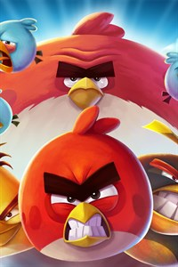
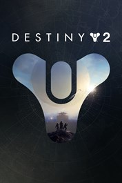

Although some might find them boring, crossword puzzles are a great way to have fun and pass time. The premise of the game is to solve words using the clues provided to you. As you discover words, you end up with some hints for words you may be missing. Crossword puzzles are simple and easy to understand, but never get boring. If I really had to be really critical about crossword puzzles, my only complaint is that some clues can be tricky to figure out especially if you're not familiar with the puzzle's subject.
Angry Birds 2 by Rovio Entertainment Oyj
Angry Birds 2 is a free offline bird game. This game is about birds who fight pigs to save their eggs. They do this by launching themselves to the destroy the structures they may face and bring down the pigs. The way this game works is that there are different maps and you are given different obstacles with the different birds you are given. You must complete a level to progress to the next and you will continously until all levels are completed in which you saved all the eggs.
Destiny 2 by Bungie
Master of Puppets is considered to be one of the most well known albums in the whole metal genre and considered to be within the top 100 albums in the world by many music critics. This album in my opinion is Metallica's most well produced and also the most involved and active the group has been compared to their other albums/projects. This album contains different ranges of music aspects ranging from melodic to distorted. Metallica keeps a well balanced between those two aspects making it one of the reasons it is so popular and one of best entry level albums within this genre. My recommendation within this album would be the self titled song "Master of Puppets" because it covers the various different aspects of what the band produces musically and because of the deep meaning behind it (this song covers many aspects of addiction) and a personal favorite from the band would be "One" which is in their 4th album "...And Justice for All". It is my personal favorite because it tells a dark story in a melodic tone and it slowly builds up to an intense tragedy reveal (this song tells a tragic story of the consequences that war may produce). Other band recommendations similar to this band would be Megadeth, Slayer, Exodus, and Sepultura.
Code of War by XDEVS LIMITED
Nevermind is not only the most popular within the grunge genre it is also one of the most well known and popular albums of all time. Nirvana's nevermind covers many different aspects of various genres such as punk, melodic, metal, psychedelic, and so much more. In my opinion because of the various genres within it is why it is so popular to various music listeners. Although this album is one of the most mainstream of all time, it goes against the standards within the industry. Each song is diverse from the other and covers many dark elements ranging from self to society. My recommendation within this album would be "Smells Like Teen Spirit" since it is their most popular song and brings out the musical aspect of what Nirvana produced (this song is just about being a teen) and a personal favorite from the artist would be "Endless, Nameless" because it covers the musical aspect of my favorite genre, metal, and the dark atmosphere between the sound and lyrics, I also like it because it goes against the mainstream industry (this song is about all intense emotions, such as anger and frustration, and just letting it all out in the end). Other band recommendations similar to this band would be Alice in Chains, Soundgarden, Stone Temple Pilots, and Pearl Jam.